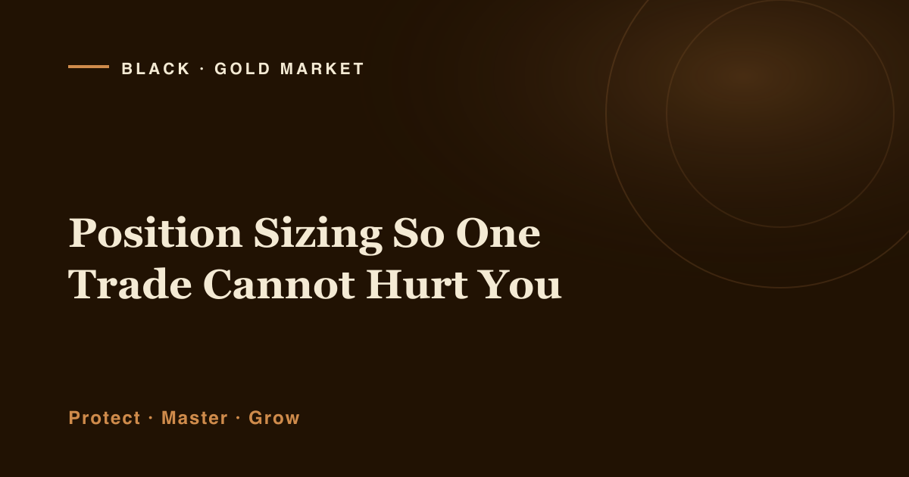

Almost nobody loses an account because they read a chart wrong. They lose it because they were too big when they read it wrong. That distinction sounds small. It is the entire difference between a bad week and a finished account.
Picture two traders looking at the same gold chart, at the same moment, with the same idea. Both are wrong. The market does what markets do, it moves against the obvious read and carries on. The first trader closes the position and opens their platform again next morning with a slightly smaller account and a slightly better education. The second has nothing left to open the platform with. Same analysis, same mistake, two completely different outcomes, decided before either clicked the button.
That decision is position sizing: the amount you put behind an idea. It is the most underrated skill in retail trading because it is unglamorous, nobody screenshots their lot size. It looks like arithmetic, and it is arithmetic, which is exactly why it works. Most traders spend years trying to improve the part of trading they cannot control, being right, while ignoring the one variable that is permanently theirs.
Risk Per Trade: Decide the Damage Before You Decide the Direction
Here is the reversal that fixes most accounts. Stop asking "how many lots should I trade?" and start asking "how much am I willing to lose on this idea?" Answer the second question and the first answers itself.
That willing-to-lose number is your risk per trade, and it belongs as a percentage of your account rather than a fixed cash figure. Percentages breathe with you: as the account grows they quietly put more behind each idea, and as it shrinks they pull you back automatically, precisely the behaviour a struggling trader needs and almost never chooses voluntarily.
Common risk-management teaching puts that figure between half a percent and two percent per trade, with one percent the number most educators land on. I will not hand you a personal recommendation. But whatever you choose, choose it while calm, write it down, and treat it as a fixed property of the account rather than something you renegotiate with yourself at 2am when a setup looks especially juicy.
One illustrative number so the idea has weight. Purely as an example: a $5,000 account risking 1% per trade puts $50 behind each idea. That is the entire consequence of being wrong, once. Ten consecutive losses, uncomfortable, but perfectly ordinary, costs roughly $480. Bruised, not gone. The trader is still a trader.
Run the same ten losses at 10% risk and that $5,000 finishes near $1,743, down roughly two thirds, now needing to nearly triple just to get back to flat. Identical analysis, identical streak. One number changed.
Stop Distance and Size Are One Decision, Not Two
Your money at risk is the product of two things: how far price has to travel against you before you are out, and how much you have on. Stop distance multiplied by position size equals what you lose when you are wrong. That is not a philosophy; it is multiplication.
Which means they are not independent choices. They are two ends of one lever, push one down and the other must come up. Look again at the diagram: three blocks of identical area, one tall and thin, one square-ish, one short and wide. Same money at risk in each. The block just changed shape.
Most traders get this backwards. They pick a lot size out of habit, "I always trade 0.1", then place the stop wherever the loss feels tolerable. That is sizing driven by feeling, and feeling is a terrible risk manager. The correct sequence runs the other way. Find where the trade is genuinely invalidated. Measure that distance. Then calculate the size that makes it cost exactly your chosen risk percentage. The stop belongs to the market's structure; the size belongs to you.
Once size is calculated rather than habitual, you never again talk yourself into a stop that is too tight just because a proper one would "hurt too much." The stop goes where it belongs and the arithmetic absorbs the difference. Traders who cut this corner tend to cut their winners short for the same underlying reason, discomfort with sitting in an open position, a habit I unpicked in why you take profit too early.
Why a Wider Stop Does Not Mean More Risk
"But surely a wider stop is riskier?" I hear this constantly, and it is the most expensive misunderstanding in retail trading, because acting on it makes people place stops too close and lose money to noise on ideas that were correct.
A wider stop is only riskier if you keep the same size. Adjust the size and it is the same risk, simply held over a longer distance.
Take the illustrative $5,000 account again, risking its $50. Suppose one setup is invalidated a short distance away and another needs three times that room. The wide-stop trade takes roughly a third of the size. Both cost $50 if they fail. Nothing extra was risked by widening the stop; more room was simply paid for with less size.
This matters enormously in gold. XAU/USD moves, and it has sessions where a stop placed as a EUR/USD trader might place one is not a risk decision at all, it is a donation to the noise. Traders who insist on tight stops purely because they refuse to reduce their lot size spend years being stopped out of ideas that later worked, then conclude their analysis is bad. The analysis was fine. The sizing forced a stop the market was always going to take. There is more on volatile conditions in the fuller guide on how to protect your capital when gold gets volatile.
- Fix your risk percentage before the session, not during it. A number you decide while flat is one you can trust; a number you decide while watching a setup is your mood wearing a costume.
- Convert the percentage to cash. Use your current balance, not last month's, not your best-ever. Vague risk is unmanaged risk.
- Find where the idea dies, then measure the distance. Locate the point at which your reason for the trade no longer holds. Structure decides this, not comfort.
- Divide cash risk by stop distance to get your size. Your risk amount, divided by the distance to invalidation and the value per unit of movement. Calculate it every time, never from memory.
- If the size looks embarrassingly small, take it anyway. A size that feels too small is usually a correct size meeting an inflated appetite. The arithmetic is not timid, it is accurate.
- Never adjust the size upward after entry. Adding to a losing position rewrites your risk after the fact and turns a planned loss into an unplanned one.
The Arithmetic of Getting Back: Why Drawdowns Are Not Symmetrical
If you take one piece of arithmetic away from this article, make it this one, it explains why professionals are so unromantic about size. Losses and gains are not mirror images. They are measured against different bases, and the base shrinks when you lose.
Lose 10% and you need about 11% to get back to even, barely different, fine. Lose 20% and you need 25%. Lose 30%, roughly 43%. Lose 50% and you need 100%: you must double what remains simply to return to where you began. Lose 80% and you need 400%. The curve does not rise gently. It accelerates away from you, fastest exactly where a damaged trader is least equipped to chase it.
Sit with the 50% case. That trader has not had a bad month, they have set themselves the task of doubling an account, just to arrive back at zero progress. And they will attempt it while frightened, with less capital, and with a powerful urge to size up and make it back quickly. Which is, of course, the exact behaviour that dug the hole.
This is why the discipline is built around never letting a drawdown get deep. Not because small losses are pleasant, but because shallow holes are climbable with ordinary trading and deep ones are not climbable with anything except luck. Sizing keeps the hole shallow, and it does its most important work on the days you never notice it.
Sizing Is the One Variable You Fully Control
Notice how little of trading actually obeys you. You do not control direction, whether a level holds, volatility, the news, the liquidity when your order fills, or whether the cleanest setup of the month fails for no reason you will ever discover. All of it sits outside you.
Now look at position size. You choose it, completely, unilaterally, before any uncertainty enters the picture. Nothing in the market can override it. It is the only input in the entire operation that does exactly what you say, every single time.
That is why I put it ahead of strategy and well ahead of prediction. A trader with an excellent read and no size discipline depends for survival on things they cannot influence. A trader with a modest read and rigorous sizing can absorb being wrong repeatedly and still be there, not through better analysis, but because they arranged never to be removed from the table.
It is also why I am wary of any approach that makes size depend on someone else's conviction. Size up because a message sounded confident, and the sizing has quietly stopped being yours, one of the deeper costs I unpack in how to stop depending on trading signals. Protect first, master second, grow third, the ordering that underpins everything I do at Black Gold Market, is not a slogan. It is a sequence, and sizing is how the first step actually happens.
If You Want Company While You Build This
None of this needs a purchase, and everything above works whether you ever hear from me again. But a habit is easier to build near other people building the same one, so, two open doors, no pressure on either.
I post real XAU/USD charts and reasoning to a Telegram channel of roughly 8,900 traders, losing ideas included, because the losing ones are where sizing shows its value. If that is useful, you are welcome to join us on Telegram.
If you would rather have the framework in writing first, I wrote The Sustainable Trader's Blueprint, a short, free guide to the risk rules that keep an account intact while a trader is still learning. No entries, no promises, no timer. Pick up the Blueprint here, and start with the sizing chapter.
Get the free Black Gold Market blueprint, a short, practical guide to defending your account through the kind of markets this article describes. One email, no spam, unsubscribe anytime.
Get the free blueprint →Frequently Asked Questions
What percentage should I risk per trade? I cannot answer that for you, it depends on your capital, experience, obligations and temperament. What I can tell you is how the ranges behave. Standard teaching sits between roughly 0.5% and 2%, with 1% most commonly cited. Below that, progress is very slow; meaningfully above it, ordinary losing streaks start doing structural rather than cosmetic damage.
Should I use a fixed lot size instead? It seems simpler. It is simpler, and that simplicity is the problem. A fixed lot means your risk changes on every trade depending on where the stop happens to sit, wide-stop trades quietly become large risks, tight-stop trades trivial ones, without you ever deciding that. It also fails to shrink when the account does, so a lot that was reasonable at your starting balance turns reckless after a drawdown.
Does correct sizing mean I stop losing money? No, and any framing that suggests otherwise is misleading. Sizing does not improve your analysis or reduce how often you are wrong, it governs only the consequence of being wrong. Trading gold and other leveraged products carries substantial risk and most retail traders lose money regardless of method. Sizing converts unpredictable damage into predictable, survivable damage, real, but not profit.
What about several positions open at once? Risk adds up, and correlated positions add up faster than people expect. Three simultaneous gold trades at 1% each are not three independent risks, leaning the same direction, they are closer to a single 3% risk wearing three costumes. Most frameworks cap total open exposure alongside the per-trade figure.
A Word on Risk
Let me be plain, because you deserve plain. Trading gold, CFDs and other leveraged instruments carries a substantial risk of loss, and most retail traders lose money. Position sizing does not change that, and I would be doing you harm if I implied it did. Correct sizing does not make a losing strategy profitable, does not raise your accuracy, and cannot protect you from every outcome, gaps, slippage and disorderly markets can all produce a loss larger than planned.
Everything here is educational and general in nature, taking no account of your circumstances. It is not financial advice and not a recommendation to trade. Every figure above is an illustration chosen to make arithmetic visible, not a suggestion about how you should trade; and no entry, stop or target discussed should be treated as a signal. Past performance does not guarantee future results. Only capital you can genuinely afford to lose should ever be exposed to this market. If you are unsure, speak to a licensed professional in your own jurisdiction first.
About Raphael
About the Author
Raphael, founder of Black Gold Market
Raphael's first principle is unfashionable and he has never bothered to dress it up: protect the capital before you try anything clever with it. He arrived at it the expensive way: months of patient, well-sized, unglamorous work undone by a single trade he sized on conviction rather than arithmetic, one position, one afternoon, the whole ledger rewritten. The analysis behind that trade was not even especially bad. The size was. He runs the Black Gold Market Telegram channel, where roughly 8,900 traders follow XAU/USD ideas posted with the losses left in, because a channel that hides its losing trades cannot teach risk. What he teaches people to read is the level, the context, and the risk, in that order, with the risk never optional. He sells no certainty and forecasts no returns.
Risk disclaimer: This article is for educational purposes only and is not financial advice. Trading gold, CFDs and other leveraged instruments carries a substantial risk of loss, and most retail traders lose money. All account balances, percentages and examples are illustrative only. Past performance does not guarantee future results. Only trade with capital you can afford to lose.